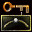

InterpolationPoint

|
Interpolation is a way of getting a smooth path from a series of points. It is not the same as splining. A spline is a smoothed line that goes through all of the points in the path. This is commonly used for smooth paths, but not in Unreal. An interpolated curve doesn't actually touch the points at all. It is pulled towards the points, but without actually going through them. This is the way Unreal uses Interpolation Points. See Making an Interpolation Path for detailed instructions. |
Properties
- bEndOfPath
- Set this property to true on the end Interpolation Point to specify the end of the path.
- bSkipNextPath
- Far as I can see it is not used in the code at all - ignore.
- FovModifier
- Modifies the FOV of the view at this point in the path. This is relative to the current FOV
- GameSpeedModifier
- Modifies the speed of the entire game between the point it is changed and the next point, generally it is better to use RateModifier whenever possible, but if you do use this make sure to reset this back to 1 at the last InterpolationPoint.
- Position
- Indicates which position this InterpolationPoint is in for a given path. Starts at 0 with 127 max
- RateModifier
- Modifies the rate at which the actor moving through the Interpolation path, well, moves. Again, this rate sort of "blends" between each point's rate and the rate of the next point.
- ScreenFlashFog
- ScreenFlashScale
Comments
Tarquin: hi. You have a user page here at RFairey BTW. 
Birelli: Yeah, please do link it in . On the subject of this though, Interpolation Points can be used to move any actor at all along a set path. I seem to recall this somewhere in reference to a boat and also of course to the JBViepoint actor in Jailbreak death sequences. I'm not sure how that should be addressed in the page though.
UMS/InterpolationTutorial has a big section on Interpolation – some of that could be copied here
Birelli: I'm gonna start pulling stuff from Hugh's UMS tutorial and editing it to suit a general concept.
Birelli: Urm, sorry about the cross-editing Tarq, I was actually putting in a few property defs when you put in the whole list, but I got it straight I think.